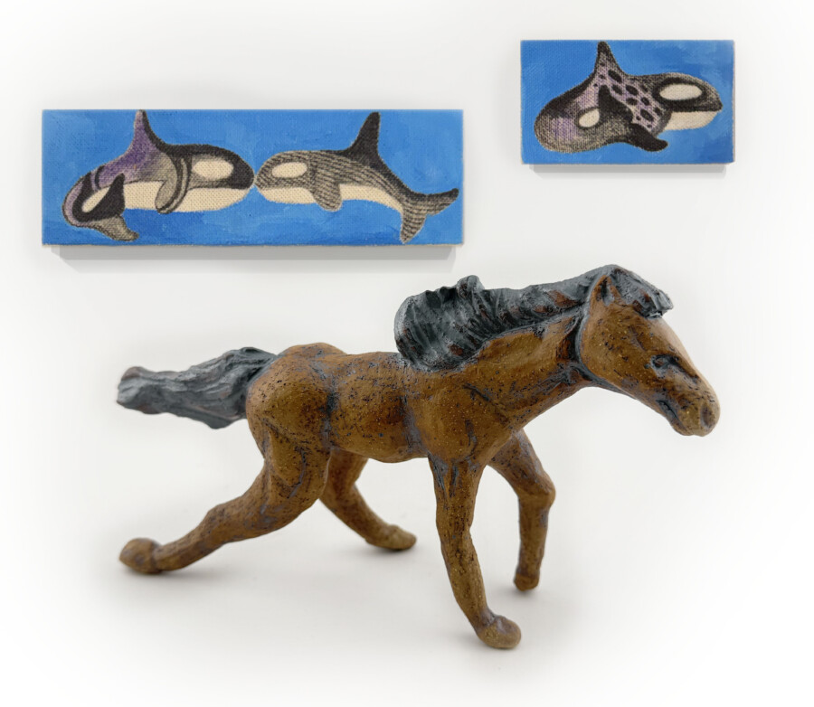

RAC Teaching Artists
The Riverside Arts Center’s FlexSpace is pleased to present a group exhibition of art by our teaching artists Christine Blanek, Diane Claussen, Erin Hayden, Corrine Miller, Tariq Tamir, Shawn Vincent, and Daiva Walz, curated by Joanne Aono. Please join us for a reception for the artists on the evening of Friday, March 13th from 5:00 to 7:00 PM. The event is free and open to the public with light refreshments served.
Opening Reception: Friday, March 13, 2026, 5:00 – 7:00 PM
Exhibition Dates: March 13 – April 11, 2026
Exhibition on view: Thursdays, Fridays, and Saturdays 1:00 – 5:00 PM
The Riverside Arts Center is pleased to present a group exhibition of art by our teaching artists Christine Blanek, Diane Claussen, Erin Hayden, Corrine Miller, Tariq Tamir, Shawn Vincent, and Daiva Walz. We are fortunate to have these talented teachers who provide our amazing classes to students of all ages in mediums encompassing painting, sculpture, ceramics, mosaics, and so much more. This exhibition provides a glimpse into their personal artistic practices outside of their educational services, revealing what their passion pulls them to create.
Shawn Vincent’s mastery of ceramics and glass is displayed in her assemblage of hanging discs and gleaming vases, while Diane Claussen’s colorful paintings show her influences of abstraction and expressionism. Christine Blanek’s stoneware pieces are an extension of her ceramic knowledge combined with sensitivity to nature, while Corrine Miller’s embroidery is an unexpected reveal of creativity and expression in response to our times. Daiva Walz’s interests in the environment are shown through ceramic vases and a large fiber wall hanging, while Erin Hayden’s grouping of ceramic tea pets and small paintings of orcas and butterflies depict her desire for slowness and reflection. Tariq Tamir’s intense installation of paintings and a dramatic dragon sculpture capture his immersion of art with life.
These seven teaching artists are all respected educators with experience and skill in their mediums of ceramics, painting, assemblage, glass, mosaics, drawing, and jewelry. The Riverside Arts Center values the professionalism they bring to our classes and the enthusiastic students they gather. The art these teaching artists make in their studios is often a result of their influences from educating, but is largely from what lies inside them – the art they have a passion to explore and express. We are grateful to have these artists be a part of the RAC Family. –Joanne Aono, curator
Christine Blanek studied Fine Arts with fiber mixed media, figure drawing and ceramics for many years at the School of the Art Institute of Chicago through their weekend programs, early college and then college. Growing up with artistic and musical parents, art and music has been a huge part of her life – taking her to work many years at Marshall Fields, Macy’s then Neiman Marcus in the Visual Department. Blanek’s love of art and working with students with disabilities has brought her to work at her local middle school as a Paraeducator. She is the RAC Ceramics Studio Director and currently teaches Ceramics for Kids, Weekend Wheel Workshops for Teens and Adults, and Spring Ceramics Class for Teens.